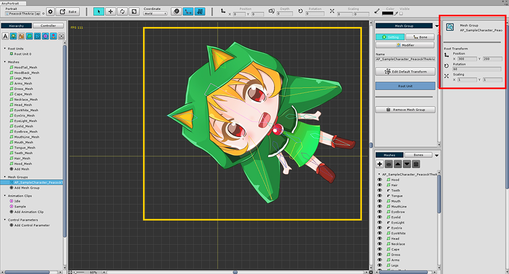
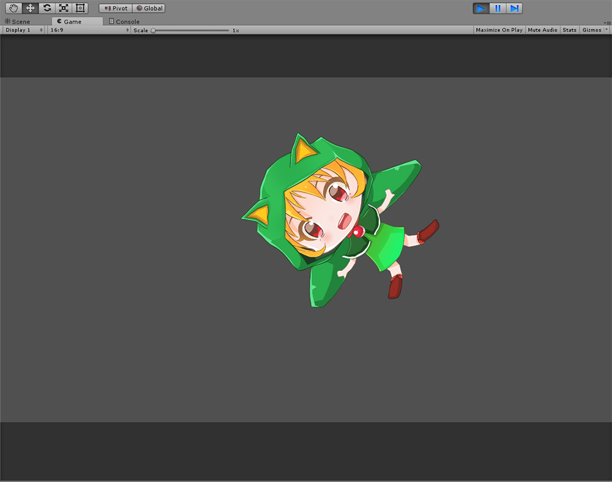

AnyPortrait > Manual > Default position of the mesh group
Default position of the mesh group
1.0.0
You may want to create a character through PSD or modify the default position of an already created character.
You can modify the position of all mesh bones,
but if you have a large number of mesh bones, this will be a very cumbersome task.
This section describes how to fix this problem by simply modifying the default position of the mesh group.

(1) Select the mesh group.
(2) Select the Setting tab.
(3) Without selecting a mesh or bone, the default position, rotation, and scale of the mesh group are displayed in the right UI.

If you change the default position, rotation value, or scale value, it applies to all meshes or bones in a batch.

You can see that the changed default position is applied in the scene as well.